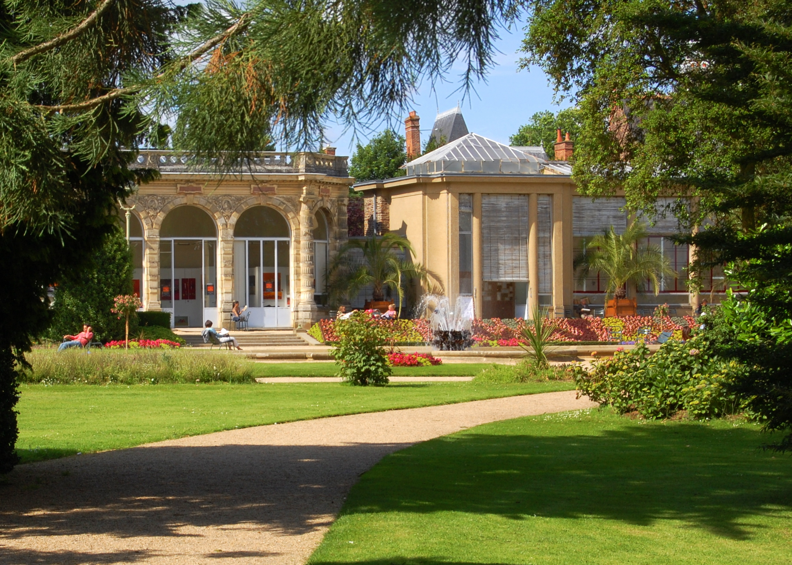

En 1807, l’orangerie et deux serres chaudes furent construites, mais ces dernières furent remplacées presque
soixante ans plus tard par les serres conçues par Martenot. Les serres de verre et d’acier de Martenot
s’inspirent largement des serres du jardin botanique de Bordeaux.
Deux projets plus onéreux proposés par Leroy en 1844 et Aristide Tourneux en 1851 furent successivement
rejetés
par la ville.
Le 17 juillet 1944, les serres de Martenot sont touchées par les bombardements : de nouvelles serres plus
classiques et se voulant intégrées aux bâtiments de l’orangerie furent construites après la guerre par
Georges
Lefort.
Les serres contenaient des plantes tropicales qui ont désormais presque totalement disparu en raison de
problèmes budgétaires (les locaux devaient être chauffés à 25 °C) et phytosanitaires : il ne reste à présent
qu’une collection de cactus dans le pavillon ouest.
Composé de fenêtres de tous les côtés sauf au nord, elle est décorée par des bas-reliefs et des inscriptions
commémorant les grands noms de la botanique et de l’horticulture : le fronton est orné de noms de botanistes
;
Linné et De Jussieu sont représentés sur la partie ouest et La Quintinie et Le Nôtre sur la partie est.
De nos jours, les 85 m² de l’orangerie ouest servent de salle d’exposition.
